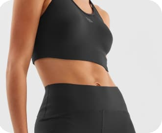

<section class="quote-home">
    <div class="container-quote">
        <div class="quote-of-the-day">
            <div class="quote-header">
                <svg class="quote-header-svg-1">
                    <use href="../img/quote-img/svg/sprite-svg.svg#icon-man"></use>
                </svg>
                <h2 class="quote-header-title">Quote of the day</h2>
                <svg class="quote-header-svg-2">
                    <use href="../img/quote-img/svg/sprite-svg.svg#icon-inverted-commas"></use>
                </svg>
            </div>
            <p class="quote-text">A lot of times I find that people who are blessed with the most talent don't ever
                develop that attitude, and the ones who aren't blessed in that way are the most competitive and have the
                biggest heart.</p>
            <p class="quote-author">Tom Brady</p>
        </div>
        <div class="quote-picture">
            
        </div>
        <div class="quote-110min-container">
            <div class="quote-110min">
                <svg class="quote-110min-svg">
                    <use href="../img/quote-img/svg/sprite-svg.svg#icon-dumbbell"></use>
                </svg>
                <p class="quote-110min-text">110 min</p>
                <p class="quote-110min-live">Daily norm of sports</p>
            </div>
        </div>
    </div>
</section>